شبنم رضاپور
کسی که PDFها را راضی کرد محتوایشان را بیکموکاست لو بدهند.
این جزوه با استفاده از جزوهساز پاپیروس و به صورت خودکار تولید شده است. ممکن است شامل خطا یا برداشت نادرست باشد و نیازمند بررسی و بازبینی مجدد است.
خونسازی (hematopoiesis) فرایند تکثیر، تقسیم و تمایز سلولهای پیشساز خونی است. این فرایند در طول رشد از کیسهٔ زرده به کبد و سپس مغز استخوان منتقل میشود. موضوعات این درس شامل مراکز خونسازی، ردههای خونی و پیشسازهای آنها، ریزمحیط مغز استخوان، مسیرهای پیامرسانی و عوامل رشد، تنظیم erythropoiesis و مراحل بلوغ گلبول قرمز است. قسمت های قبل به طور مفصل در پارت های قبلی شرح داده شد، حتما قبل از مطالعه این پارت، پارت های قبلی مبحث خونسازی را مطالعه بفرمایید.
خونسازی (hematopoiesis) شامل تکثیر، تقسیم و تمایز سلولهای پیشساز خونی است.
با توجه به مرحلهٔ رشد، خونسازی ابتدا در کیسهٔ زرده(Yolk Sac) سپس در کبد(Fetal Liver) و بعد در مغز استخوان(Bone Marrow) انجام میشود. در نمودار شکل زیر وضعیت خونسازی را در سنین مختلف و دوران جنینی مشاهده میکنید.
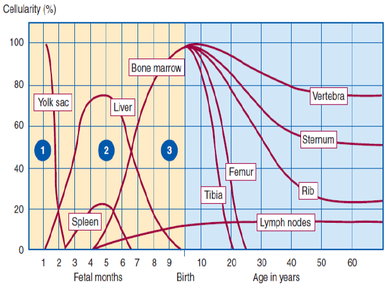
کیسهٔ زرده(Yolk Sac): رگزایی و خونسازی همزمان انجام میشوند؛ این مرحله خونسازی درونرگی (Intravascular Hematopoiesis) یا خونسازی اولیه (Primitive Hematopoiesis) نام دارد. سلول های مادر اولیه یا Primitive stem cell ها RBC های بزرگ هسته دار و مگالوبلاستیک تولید میکنند و بهصورت مجتمعهایی کنار هم قرار میگیرند که به آنها blood island یا جزایر خونی میگویند. بررسی میکروسکوپی نشان میدهد که فقط ردهٔ اریتروئیدی (Erythropoiesis) وجود دارد؛ ازاینرو به آن خونسازی اولیه میگویند. هموگلوبین گلبولهای قرمز این مرحله شامل هموگلوبینهای گاور ۱ (Gower 1)، گاور ۲ (Gower 2) و پورتلند (Portland) است (هموگلوبین های رویانی Embryonic Hb)
ناحیهٔ آورتا-گونادا-مزونفروس (Aorta-Gonada-Mesonephrous; AGM): با ادامهٔ تکامل (development) و ورود به مراحل اندامزایی (organogenesis)، در ناحیهٔ آورتا-گونادا-مزونفروس (aorta-gonad-mesonephros) بخشهایی از قوس شکمی آئورت، کلیه(ساختار های پایه نفرون) و غدد جنسی(گنادها) شکل میگیرند. در این ناحیه Secondary stem cell یا سلول های مادر ثانویه(نهایی) پدید میآیند که با وجود توان خونسازی متمرکز و محدود، میتوانند همهٔ ردههای خونی را بسازند. این فرایند را خونسازی قطعی یا ثانویه (definitive hematopoiesis) یا خونسازی برونرگی (Extravascular Hematopoiesis) مینامند.
کبد (Fetal Liver): stem cellهای نهایی در AGM بهتدریج به کبد مهاجرت میکنند و کبد تا نزدیکی تولد(چند روز تا یک هفته قبل از تولد) محل خونسازی است و پس از آن متوقف میشود؛ سپس خونسازی به مغز استخوان منتقل میشود. (مغز استخوان مقصد اصلی Stem cell ها و محل نهایی خونسازی است)
مغز استخوان (Bone Marrow) پس از تولد: ابتدا همهٔ استخوانها خونسازی میکنند؛ اما با سازمانیافتن کانونهای خونسازی، استخوانهای دراز بیشتر نقش اتصال ماهیچهها، حرکت و محافظت را بر عهده میگیرند و خونسازی عمدتا در استخوان های پهن صورت میگیرد. در بزرگسالان خونسازی عمدتاً در استخوانهای پهن و کوتاه انجام میشود. محل استاندارد نمونهبرداری از مغز استخوان در بزرگسالان، که در مراکز سراسر دنیا معرفی شده است، بخش خلفی استخوان ایلیاک (posterior iliac crest; PIS) است.
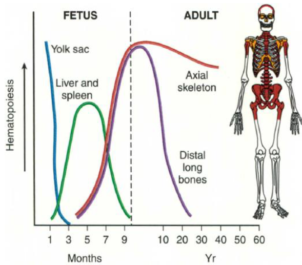
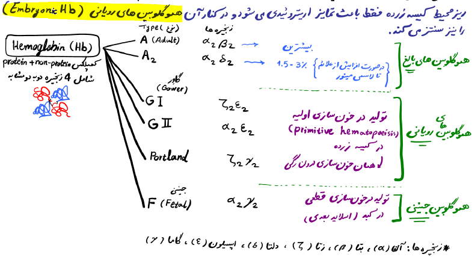
| مرحله/محل | ویژگیهای خونسازی |
|---|---|
| کیسهٔ زرده | رگزایی و خونسازی همزمان؛ خونسازی درونرگی و اولیه؛ مجتمعهای سلولی blood island؛ فقط ردهٔ اریتروئیدی؛ هموگلوبینهای گاور ۱، گاور ۲ و پورتلند(هموگلوبین های رویانی) |
| ناحیهٔ AGM | پیدایش stem cellهایی با توان خونسازی محدود که میتوانند همهٔ ردههای خونی را بسازند؛ خونسازی قطعی (definitive hematopoiesis) یا برون رگی |
| کبد | سپس stem cell ها به کبد مهاجرت میکنند و کبد تا نزدیکی تولد محل خونسازی است |
| مغز استخوان پس از تولد | تنها ارگان خونساز پس از تولد؛ در بزرگسالان خونسازی عمدتاً در استخوانهای پهن و کوتاه است؛ محل استاندارد نمونهبرداری بخش خلفی استخوان ایلیاک (posterior iliac crest) است |
تیموس ارگان اختصاصی تمایز لنفوسیت T است؛ بیشتر سلولهای خونی در مغز استخوان تکامل پیدا میکنند و لنفوسیت T در تیموس. نامهای T(Thymus) و B(Bone marrow) به مراکز تکامل و بلوغ این سلولها اشاره دارند. B نخست در پرندگان و در بورس فابریسیوس (bursa of Fabricius)، ارگانی مرتبط با دستگاه گوارش، شناخته شد؛ این ارگان تکامل سلولهای B را انجام میدهد. در مدل انسانی نیز B با bone marrow همخوانی دارد، زیرا سلول B در مغز استخوان تکامل پیدا میکند.
لنفوسیتها شامل B، T و سلولهای NK (Natural Killer Cells) هستند؛ زیرمجموعهٔ NKT از T cell نیز وجود دارد. B و T با آنتیژنها مقابله میکنند. آنتیژن بیگانه الزاماً چیزی نیست که از بیرون وارد بدن شده باشد؛ سلول توموریِ ایجادشده در بدن نیز آنتیژنهای بیگانه دارد. برخی عوامل آنتیژنی راههایی برای فرار پیدا میکنند و شاخصهایی ارائه میدهند که B و T آنها را نمیشناسند؛ اما NK cell میتواند آنها را شناسایی و با آنها مقابله کند.
| سلول/ساختار | محل تکامل یا نقش ذکرشده |
|---|---|
| B cell | در انسان در مغز استخوان تکامل پیدا میکند؛ با آنتیژنها مقابله میکند |
| T cell | تمایز اختصاصی آن در تیموس انجام میشود؛ با آنتیژنها مقابله میکند |
| NK cell | میتواند برخی عوامل آنتیژنی را که B و T نمیشناسند شناسایی و با آنها مقابله کند |
| NKT | زیرمجموعهای دیگر از لنفوسیتهای T |
در برخی درمانهای اختصاصی تومور، از جمله برای بعضی بدخیمیها و سرطان پستان، لنفوسیتهای بیمار جدا و در محیط بیرون از بدن برای مقابلهٔ اختصاصی با تومور آماده میشوند. شاخصهای لنفوسیتی تغییر میکنند تا سلولها هدف توموری را شناسایی کنند. این رویکرد از حوزههای cell therapy است و میتواند درمان اختصاصی فراهم کند و اثرات درمانهایی مانند شیمیدرمانی و رادیوتراپی را کاهش دهد.
ریزمحیط مغز استخوان شامل سلولهای استرومال (Stromal cells) مانند fibroblast، osteoblast، reticular adventitial cell و macrophage است؛ بعدها T cellها نیز در این مجموعه مطرح میشوند. این سلولها با ارسال سیگنال و فراهمکردن فاکتور های رشد (growth factor) از خونسازی حمایت میکنند و عوامل سمی را جذب و از بین میبرند. در برخی منابع، نقش آنها بهصورت پرستار یا nurse توصیف میشود؛ ازاینرو به آنها stromal cell گفته میشود.
عوامل ریزمحیط مغز استخوان هم سلولیاند و هم غیرسلولی. growth factorها یا عوامل رشد و transcription factorها یا عوامل رونویسی از عوامل غیرسلولی مؤثر بر خونسازی و تمایز هستند.

| اجزای ریزمحیط مغز استخوان | نقش یا ویژگی ذکرشده |
|---|---|
| fibroblast، osteoblast، reticular adventitial cell، macrophage و بعدها T cell | سلولهای استرومال |
| سلولهای استرومال | ارسال سیگنال و فراهمکردن growth factor؛ حمایت از خونسازی؛ جذب و از بین بردن عوامل سمی |
| عوامل سلولی و غیرسلولی | هر دو در ریزمحیط مطرحاند |
| growth factorها و transcription factorها | عوامل غیرسلولی مؤثر بر خونسازی و تمایز |
ویژگی مهم stem cell و progenitor cell، خودنوزایی (self-renewal) است. این سلولها میتوانند تقسیم میتوزی متقارن یا نامتقارن انجام دهند و جایگزین خود را در مجموعهٔ سلولی حفظ کنند.
سلول آغازین خونسازی، hematopoietic stem cell (HSC) یا pluripotent hematopoietic stem cell است. در اینجا pluripotent(چند توان بودن) به توانایی ساختن همهٔ سلولهای ردهٔ بافت خونی اشاره دارد و با totipotent یکی نیست. (پیشوند هایی که پیش از نام سلول آورده میشود کارایی و توانایی آن را توضیح میدهند) برای مقایسه، پس از ترکیب oocyte ثانویه با spermatozoa، zygote یا سلول تخم تشکیل میشود و با تقسیمهای میتوزی به دو، چهار و هشت سلول میرسد. در مثال مطرحشده، به سلولهای هشتسلولی totipotent stem cell گفته میشود؛ اگر یکی از آنها جدا و در شرایط مناسب نگهداری شود، میتواند جنین کامل ایجاد کند.
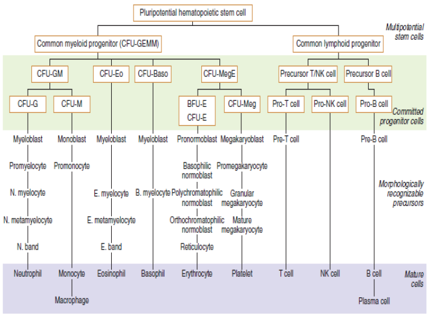
خونسازی را میتوان به کارخانهای با خطهای تولید مختلف تشبیه کرد: یک خط neutrophil و خطهای دیگر monocyte، eosinophil، basophil، erythrocyte، platelet، T cell، NK cell و B cell تولید میکنند ( به تصویر بالا توجه کنید و آن را حفظ کنید!)
سلولهای خونی به دو مجموعهٔ (میلوئید) myeloid و (لنفوئید)lymphoid تقسیم میشوند:
برای ورود به ردهٔ myeloid، HSC تقسیم نامتقارن میکند: یک سلول جای خود میماند و سلول دیگر تمایزیافتهتر میشود و common myeloid progenitor یا CFU-GEMM نام میگیرد. CFU-GEMM مخفف colony-forming unit—granulocyte, erythrocyte, monocyte, megakaryocyte است(به ترتیب). در کشت آزمایشگاهی، این سلول میتواند (کلنی) colony شامل granulocyte، erythrocyte، monocyte و megakaryocyte بسازد.
در مقایسه با HSC، که هر دو ردهٔ myeloid و lymphoid را میسازد، common myeloid progenitor به ساخت ردهٔ myeloid محدود شده است. در مقابل، common lymphoid progenitor میتواند B cell، T cell و NK cell ایجاد کند. نمودارهای اسلاید نیز شاخههای common myeloid progenitor، CFU-GEMM، CFU-GM، CFU-Eo، CFU-Baso، CFU-MegE و common lymphoid progenitor و پیشسازهای T/NK و B را نشان میدهند.
| سلول/پیشساز | توان تمایز ذکرشده |
|---|---|
| HSC | ساخت هر دو ردهٔ myeloid و lymphoid |
| common myeloid progenitor | ساخت ردهٔ myeloid |
| common lymphoid progenitor | ایجاد B cell، T cell و NK cell |
| CFU-GEMM | ساخت colony شامل granulocyte، erythrocyte، monocyte و megakaryocyte |
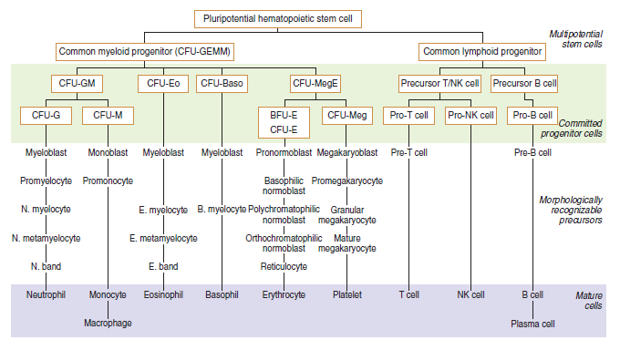
تصویر ۱common myeloid progenitor را mixed myeloid stem cell نیز مینامند، زیرا میتواند همهٔ سلولهای myeloid را بسازد.
| پیشساز/مسیر | سلولهای حاصل یا سرنوشت ذکرشده |
|---|---|
| common myeloid progenitor → CFU-MegE | megakaryocyte، platelet و erythrocyte؛ در این مرحله هنوز به یک ردهٔ نهایی متعهد نشده است |
| BFU-E و CFU-E | committed progenitor؛ فقط تولید ردهٔ گلبول قرمز؛ مقادیر بیانشده بهترتیب ۵۰٬۰۰۰ تا ۱۰۰٬۰۰۰ و حداکثر ۳۰٬۰۰۰ گلبول قرمز |
| شاخهٔ CFU-Meg | تولید platelet |
| common myeloid progenitor → CFU-GM | توانایی تولید neutrophil و monocyte |
| CFU-G | تولید neutrophil؛ در این کاربرد granulocyte نمایندهٔ neutrophil است |
| CFU-M | تولید monocyte |
| CFU-Eo | ایجاد اختصاصی ردهٔ eosinophil |
| CFU-Baso | ایجاد اختصاصی ردهٔ basophil |
در امتداد درخت، self-renewal و قدرت تمایز بهتدریج کاهش مییابد. در انتهای مسیر، neutrophil، monocyte و erythrocyte سلولهایی متمایز با کارکردهای متفاوتاند، هرچند اجداد مشترک دارند. تأکید شده است که درخت خونسازی باید حفظ شود و تمرین آن برای جلسهٔ بعد نیز مورد پرسش خواهد بود. برای تمرین، درخت را چند بار از روی حافظه بنویسید و در صورت فراموشی، جای خالی بگذارید و تمرین را تکرار کنید.
تا مراحل اولیهٔ نشاندادهشده در نمودار یعنی قسمت های سبز، سلولها از نظر مورفولوژی قابل شناسایی نیستند؛ progenitorها شبیه هم و شبیه lymphocyte هستند. CD34 یکی از markerهای این سلولهاست. بررسی CD34 همراه با CD38 و سپس markerهای ردهای میتواند مسیر تمایز را نشان دهد:
از مرحلهای به بعد، سلولها از نظر مورفولوژی قابل شناساییاند. شکلهای اسلاید نیز سلولهای CD34-positive و colonyهای CD34-positive در کشت را نشان میدهند.
| مورد بررسی | markerهای ذکرشده |
|---|---|
| سلولهای مراحل اولیهٔ progenitor | CD34؛ همراه با CD38 در بررسی مسیر تمایز |
| ردهٔ اریتروئیدی | CD11 و CD71 |
| ردهٔ myeloid | CD33 |
| megakaryocyte | CD41 و CD61 |
تصویر ۱۲
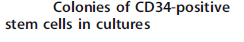
تصویر ۱۳HSCها توانایی homing یا مسیریابی دارند. میتوان CD34-positive stem cellها را از خون جدا کرد؛ در پیوند، آنها را از راه ورید به بیمار تزریق میکنند تا خودشان به مغز استخوان برسند، جایگزین شوند و خونسازی را آغاز کنند. جمعآوری سلول از خون اهداکننده، در مقایسه با بیهوشکردن اهداکننده و گرفتن نمونه از حدود ۱۵ محل مغز استخوان، روشی آسانتر، سریعتر و غیر تهاجمی تر یا non-invasive است. شکلهای مربوط به homing به مغز استخوان و mobilization از مغز استخوان به خون محیطی نیز این جابهجایی را نشان میدهند.
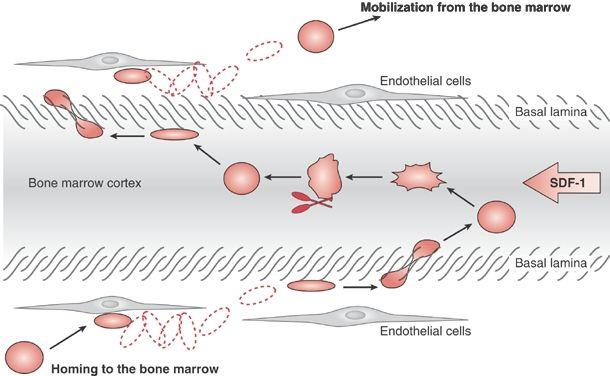
تصویر ۲شکل: Figure 18-03. Copyright © 2005 Elsevier Inc. (USA) All rights reserved.
HSC از طریق ligandهای مختلف با سلولهای استرومال ارتباط برقرار میکند. یکی از این ارتباطها از طریق CXCR4 است که سلول را در مغز استخوان نگه میدارد. با تجویز غلظت زیاد G-CSF، این ارتباط شکسته میشود و سلولهای مادر خونساز از مغز استخوان وارد خون محیطی میشوند. دگزامتازون نیز گاهی همراه G-CSF برای mobilization به کار میرود.
برای جمعآوری سلولها ممکن است از فرد خواسته شود داروها را مثلاً ۱۸ ساعت پیش از مراجعه تزریق کند؛ سپس خون گرفته میشود و stem cellها جدا، در کیسه جمعآوری و فریز میشوند تا برای پیوند استفاده شوند. آمادهسازی و پردازش این سلولها از فعالیتهای تیم پیوند است.
| فرایند/عامل | توضیح ذکرشده |
|---|---|
| homing | CD34-positive stem cellهای تزریقشده از راه ورید خودشان به مغز استخوان میرسند، جایگزین میشوند و خونسازی را آغاز میکنند |
| CXCR4 | یکی از ارتباطهای HSC با سلولهای استرومال؛ سلول را در مغز استخوان نگه میدارد |
| G-CSF با غلظت زیاد | ارتباط نگهدارنده شکسته میشود و سلولهای مادر خونساز وارد خون محیطی میشوند |
| دگزامتازون | گاهی همراه G-CSF برای mobilization به کار میرود |
| جمعآوری و آمادهسازی | خون گرفته میشود، stem cellها جدا و در کیسه جمعآوری و فریز میشوند |
از مسیرهای مؤثر بر stemness که باعث میشود stem cell ها ویژگی خود را حفظ کنند به این 4 سیگنال نیاز دارند: Jagged–Delta signaling، Wnt signaling، Hedgehog و Janus kinase ذکر شدهاند. در گفتار، چهار مورد Jagged–Delta، Wnt، Notch و Janus kinase یا JAK–STAT نام برده شدهاند.
در Jagged–Delta/Notch، سلول استرومال با سلول مادر خونساز ارتباط برقرار میکند. Notch بخشی خارجسلولی دارد و با اتصال ligand، گیرنده بریده میشود و پیام به داخل سلول میرسد؛ تا پیش از اتصال ligand پیامی منتقل نمیشود. این مسیر به cleavageهای گیرنده وابسته است.
در شکل، موارد زیر نشان داده شدهاند:
پیام مطرحشده، جلوگیری از apoptosis، بقای سلول و امکان تقسیم میتوزی متقارن یا نامتقارن است.
 تصویر ۳
تصویر ۳
شکل: Figure 19-02. Copyright © 2005 Elsevier Inc. (USA) All rights reserved.
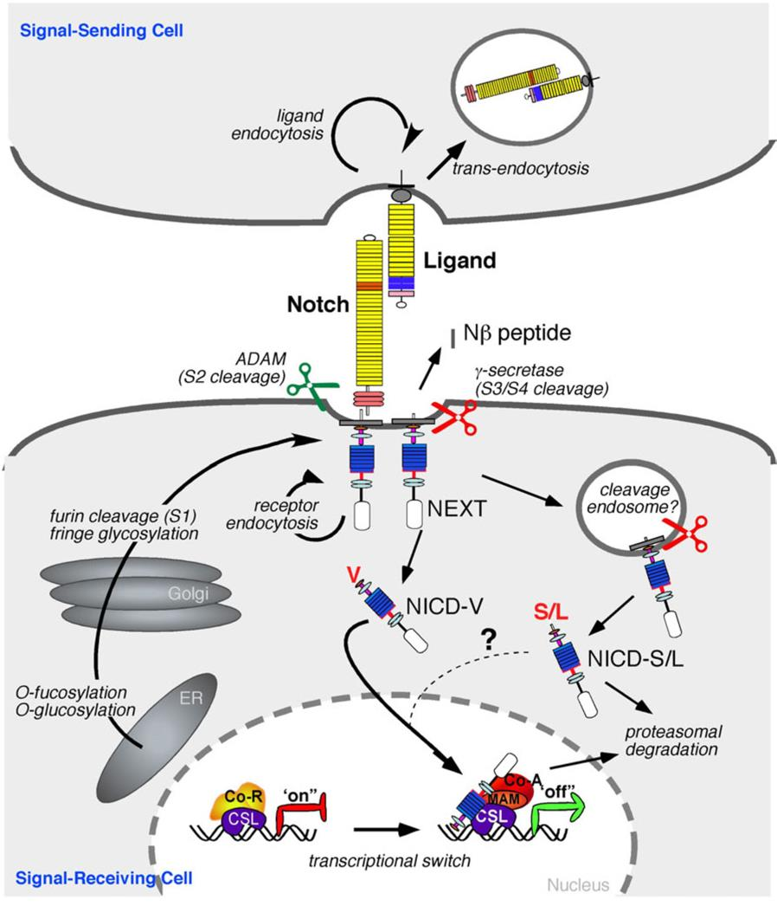
تصویر ۴در Wnt، گیرندهٔ سطح سلول از LRP5/6 و Frizzled تشکیل میشود. وقتی این دو از هم جدا باشند، β-catenin در سیتوپلاسم فسفریله است. با رسیدن Wnt، LRP و Frizzled به هم متصل میشوند؛ β-catenin دفسفریله میشود و وارد هسته میگردد. β-catenin نقش transcription factor دارد و ژنهای مرتبط با تقسیم میتوز سلول را رونویسی میکند.
فعالشدن بیشازحد و مهارنشدن این مسیر میتواند در بدخیمیها و سرطانهای خونی مطرح باشد؛ در این بدخیمیها ممکن است مسیرها آسیب دیده یا جهشیافته باشند.
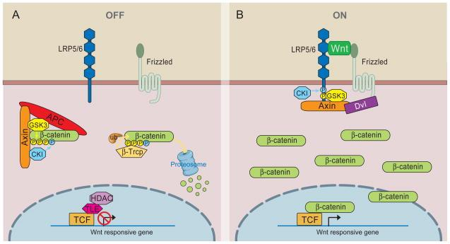
تصویر ۵در شکلهای Hedgehog signaling، اجزای Gli 1/2 و Act و نیز Ci نشان داده شدهاند. جزئیات بیشتری از عملکرد این نمودار توضیح داده نشده است.
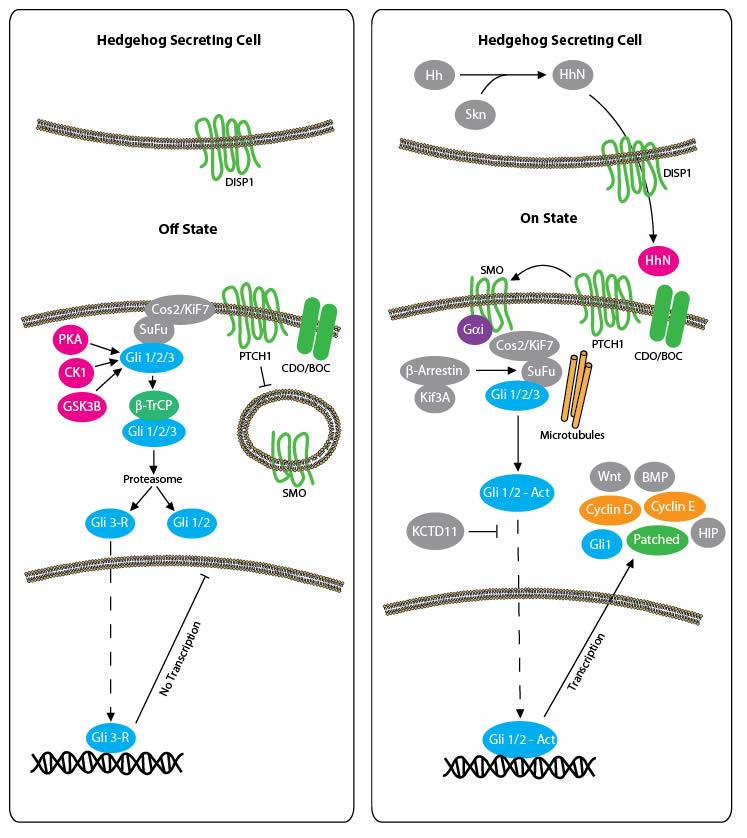
تصویر ۶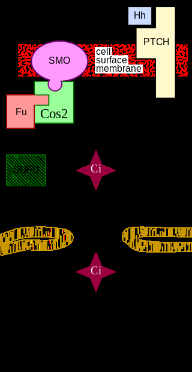
تصویر ۷در Janus kinase signaling، مسیر JAK–STAT مطرح است. تصویر مسیر JAK2–STAT5 و نیز چرخهٔ گیرندهٔ cytokine، اتصال cytokine، فعالشدن JAK، recruitment و phosphorylation شدن STAT، dimerization و انتقال STAT dimer به هسته برای رونویسی را نشان میدهد. در نمودار، phosphorylation پروتئینهای مرتبط با گیرنده، تخریب پروتئینی وابسته به proteasome، negative feedback inhibition و cross-talk inhibition نیز دیده میشوند.
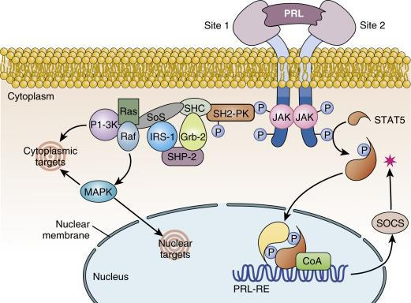
تصویر ۸| مسیر | اجزا/رویدادهای ذکرشده | پیامد یا نکتهٔ مطرحشده |
|---|---|---|
| Jagged–Delta/Notch | اتصال ligand؛ cleavageهای furin (S1)، ADAM (S2) و γ-secretase (S3/S4)؛ ligand endocytosis و تغییر transcriptional switch | جلوگیری از apoptosis، بقای سلول و امکان تقسیم میتوزی متقارن یا نامتقارن |
| Wnt | اتصال LRP5/6 و Frizzled پس از رسیدن Wnt؛ dephosphorylation شدن β-catenin و ورود آن به هسته | β-catenin نقش transcription factor دارد و ژنهای مرتبط با تقسیم میتوز سلول را رونویسی میکند؛ فعالشدن بیشازحد و مهارنشدن مسیر میتواند در بدخیمیها مطرح باشد |
| Hedgehog | در شکلها Gli 1/2، Act و Ci نشان داده شدهاند | جزئیات بیشتری از عملکرد نمودار در گفتار توضیح داده نشده است |
| Janus kinase/JAK–STAT | فعالشدن JAK؛ recruitment و phosphorylation شدن STAT؛ dimerization و انتقال STAT dimer به هسته؛ negative feedback و cross-talk inhibition | مسیرهای cytokine میتوانند به proliferation یا survival منجر شوند؛ SOCS از مهارکنندههای منفی است |
Epigenetic به عواملی گفته میشود که بدون تغییر توالی DNA، بیان ژن را تغییر میدهند.
برای مثال، methylation و acetylation میتوانند بیان ژن را تغییر دهند:
در توضیح استاد، بخشهایی از RNA حاصل از فرایند رونویسی و حذف intronها به قطعاتی کوچک، در حدود ۱۹ تا ۲۵ nucleotide، ارتباط داده شد و بهدلیل اندازهٔ کوچک، microRNA نام گرفت. Epigenetic در stemness و تمایز نقش دارد.
از عوامل مطرحشده در اسلایدها BMI1، TET2، DNMT1، DNMT3A و FoxO هستند:
طی حدود پنج تا ده سال گذشته این عوامل بهتدریج شناسایی شدهاند و آسیب یا تغییر آنها در بدخیمیهای خونی نقش دارد؛ بنابراین ممکن است علاوه بر شیمیدرمانی، تنظیم یا مهار تغییرهای epigenetic نیز مطرح باشد.
| عامل/فرایند | نقش یا ارتباط ذکرشده |
|---|---|
| افزایش methylation | همراه با کاهش بیان ژن |
| کاهش methylation | همراه با افزایش بیان ژن |
| افزایش acetylation | افزایش بیان ژن |
| microRNA | در تنظیم بیان ژن مطرح است؛ قطعات کوچک حدود ۱۹ تا ۲۵ nucleotide در توضیح درس به آن مرتبط شدند |
| BMI1 | جزء اصلی PRC1؛ تنظیم chromatin structure و gene silencing؛ ضروری دانستهشده برای self-renewal سلولهای بنیادی طبیعی و سرطانی |
| TET2 | تبدیل 5-methylcytosine به 5-hydroxymethylcytosine؛ نقش در DNA hydroxymethylation و پیشبرد DNA demethylation |
| DNA methylation | مؤثر بر gene expression، chromatin stability و genetic imprinting |
| FoxO | در برابر ROS مطرح شده است |
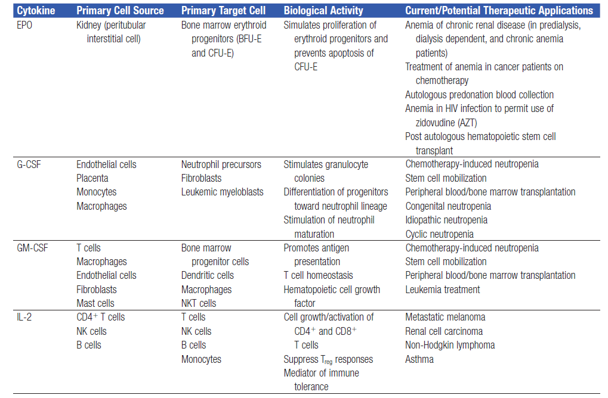
تصویر ۹Transcription factorها بر تمایز و بیان ژنهای خونی اثر دارند و میتوانند در بیماریزایی و بدخیمیهای خونی نقش داشته باشند. برای مثال، در ژن β-globin توالیهای متعددی وجود دارد؛ ژن هموگلوبین، چه زنجیرهٔ α و چه β، سه exon و دو intron دارد. transcription factorها در توالیهای تنظیمی و نزدیک محل آغاز رونویسی قرار میگیرند و به آغاز و افزایش سرعت رونویسی یا transcription کمک میکنند.
در مراحل ابتدایی HSC بهسوی myeloid stem cell، SCL، RUNX1، TAL1 و MLL مطرحاند؛ با ورود سلول به ردهٔ اریتروئیدی، transcription factorهای مؤثر تغییر میکنند. اسلایدها نیز Runx1، GATA-1، GATA-2، MLL، Gfi-1b و Bmi-1 را در ارتباط با self-renewal و ردههای سلولی نشان میدهند. در نمودارهای دیگر، Lmo-2، LT-HSC، Bmi-1 و Gfi-1 در ارتباط با production، survival یا self-renewal سلولهای HSC آمدهاند. همچنین GATA-1، GATA-2، FOG-1 و Fli-1 در کنار مراحل progenitor و committed precursor مطرحاند.
GATA-1 به توالیهای GATA در promoter متصل میشود و نامش از همین توالی گرفته شده است. از میان شش GATA، سه مورد در hematopoiesis مطرحاند. GATA-1 برای ردهٔ اریتروئیدی مهم است؛ جهش در ژن آن میتواند کمخونی شدید ایجاد کند و وضعیت ممکن است شبیه thalassemia major باشد و به تزریق خون نیاز پیدا کند.
GATA-1 همراهی به نام FOG (Friend of GATA) دارد و این دو در تمایز اریتروئیدی نقش دارند. در مراحل پیشساز، NFE2 و EKLF نیز مطرحاند؛ نامهای توسعهیافتهٔ آنها در اسلاید/گفتار بهترتیب nuclear factor erythroid 2 و erythroid Krüppel-like factor آمده است. اختلال در این transcription factorها میتواند تمایز اریتروئیدی را مختل کند.
در نمودارهای transcription factor، SCL، C/EBPα، GATA-1، GATA-2، PU.1، NF-E2، AML1/RUNX1، GATA-3 و Egr/Nab نیز در ارتباط با شاخههای myeloid، lymphoid، megakaryocyte و erythrocyte نشان داده شدهاند. در نموداری دیگر، PU.1 و C/EBPβ در ارتباط با ردههای myeloid و lymphocyte آمدهاند. شرح شکل تأکید میکند که سرنوشت و تولید سلول با فعالیت transcription factorها و بیان یا خاموششدن ژنهای بلوغ رقم میخورد.
متن اسلاید دربارهٔ core binding factors میگوید این فاکتورها دو زنجیرهٔ α و β دارند؛ CBFα با AML1/RUNX1 شناخته میشود و CBFβ در granulocyteها ذکر شده است. CBF برای بلوغ سلولهای myeloid حساس است. اسلاید همچنین بیان میکند که ادغام ژنی ناشی از (1;8):21 فاکتور نسخهبرداری ناهنجار CBF ایجاد میکند و مانع نسخهبرداری میشود.
| عامل/گروه | ارتباط ذکرشده |
|---|---|
| SCL، RUNX1، TAL1 و MLL | مطرح در مراحل ابتدایی HSC بهسوی myeloid stem cell |
| Runx1، GATA-1، GATA-2، MLL، Gfi-1b و Bmi-1 | در اسلایدها در ارتباط با self-renewal و ردههای سلولی |
| Lmo-2، LT-HSC، Bmi-1 و Gfi-1 | در نمودارها در ارتباط با production، survival یا self-renewal سلولهای HSC |
| GATA-1، GATA-2، FOG-1 و Fli-1 | در کنار مراحل progenitor و committed precursor |
| GATA-1 و FOG | در تمایز اریتروئیدی نقش دارند |
| NFE2 و ELF | در مراحل پیشساز مطرحاند؛ نامهای توسعهیافته در متن آمده است |
| SCL، C/EBPα، GATA-1، GATA-2، PU.1، NF-E2، AML1/RUNX1، GATA-3 و Egr/Nab | در نمودارها در ارتباط با شاخههای myeloid، lymphoid، megakaryocyte و erythrocyte |
| PU.1 و C/EBPβ | در نموداری دیگر در ارتباط با ردههای myeloid و lymphocyte |
| CBFα/AML1/RUNX1 و CBFβ | CBFها دو زنجیره دارند؛ CBF برای بلوغ سلولهای myeloid حساس است و CBFβ در granulocyteها ذکر شده است |
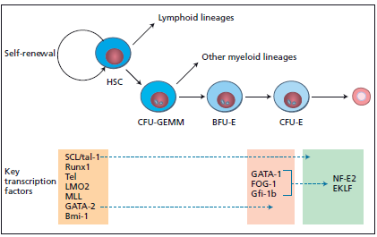
تصویر ۳۰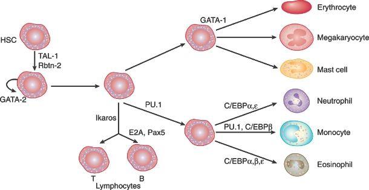
تصویر ۳۱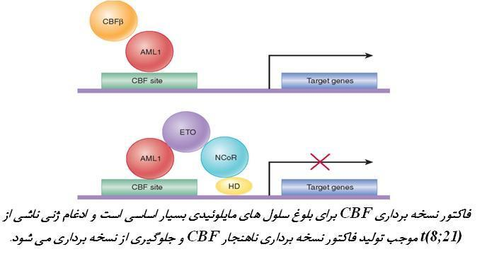
تصویر ۳۲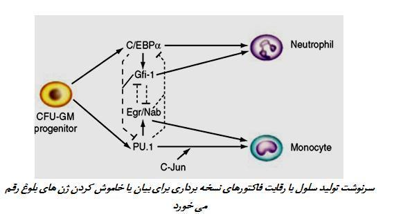
تصویر ۳۴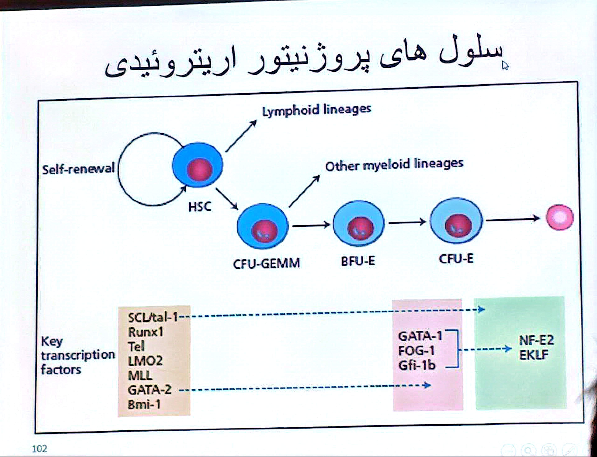
تصویر ۴۷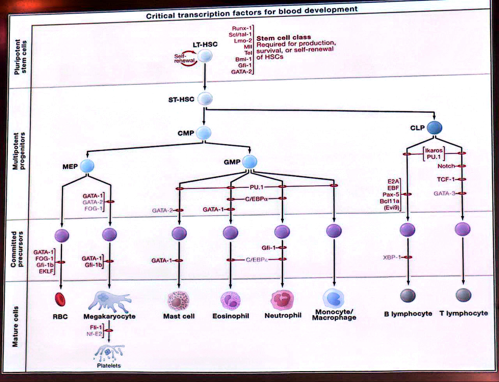
تصویر ۵۰Micro RNA in Hematopoiesis نیز بهعنوان موضوعی در اسلاید آمده است. شکل نامهایی از جمله miR-190 و miR-34a را در کنار برخی ردهها، از جمله mast cell، T helper و dendritic cell، نشان میدهد.
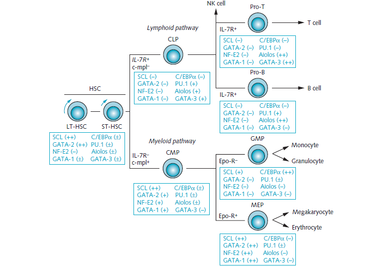
تصویر ۲۶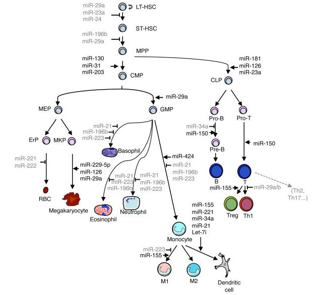
تصویر ۲۷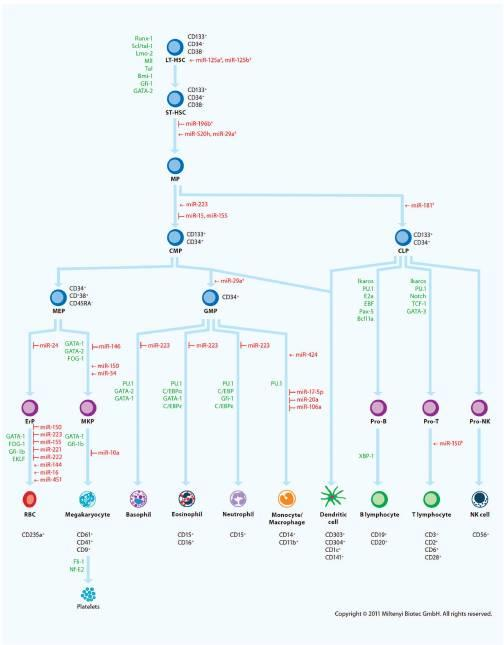
تصویر ۲۸بسیاری از growth factorها محصول فعالیت سلولهای استرومالاند. CSF مخفف colony-stimulating factor است. وقتی GM در نام GM-CSF میآید، اثر آن بر سلولهای GM-CFU مطرح است.
اصطلاح interleukin ابتدا برای موادی به کار رفت که سلولهای ایمنی یا leukocyteها در فضای بینسلولی ترشح میکردند و بر سلولهای دیگر اثر میگذاشتند؛ بعدها واژهٔ عامتر cytokine رواج یافت. cytokine پیامرسان یا محرکی است که بر سلول اثر میگذارد.
| عامل | نقش یا ارتباط ذکرشده |
|---|---|
| IL-3 و GM-CSF | فاکتورهای رشد عمومی؛ زمینهٔ رشد برای ردههای مختلف، از جمله erythrocyte و platelet |
| G-CSF | رشد ردهٔ neutrophil |
| EPO | رشد ردهٔ اریتروئیدی |
| TPO | رشد ردهٔ platelet |
| M-CSF | محرک تولید monocyte |
| IL-6 | تمایز B cell و تبدیل آن به plasma cell؛ افزایش در التهابها و بیماریهای التهابی |
| IL-5 | در برخی کتابهای قدیمی eosinophilopoietic hormone نامیده شده است |
| IL-4 | در تکامل پاسخ B cell، تولید آنتیبادی و تمایز لنفوسیتها مطرح است |
| IL-3 | در basophilic differentiation؛ اثر synergistic با G-CSF، M-CSF، GM-CSF، IL-1، IL-4، IL-5، IL-6 و IL-11 |
| IL-6 | در اسلایدها در B-cell differentiation و رشد malignant plasma cell |
| IL-11 | در ردهٔ megakaryocyte |
| IL-7 | growth factor سلولهای lymphoid و عامل همافزا با FLT3L |
| TPO | از طریق c-Mpl، یک tyrosine kinase، در HSC و ردهٔ megakaryocyte مطرح است |
در اسلاید، عوامل مهارکنندهٔ erythropoiesis شامل IFN-γ، TGF-β و TNF-α هستند. در گفتار نیز توضیح داده شد که افزایش این عوامل میتواند مغز استخوان را سرکوب کند و خونسازی را کاهش دهد.
IFN-γ از T cellها و T helperها ترشح میشود. TNF-α مخفف tumor necrosis factor است و در مواجههٔ بدن با عواملی مانند تومور آزاد میشود. افزایش این cytokineها در بدخیمیها، بیماریهای مزمن التهابی مانند rheumatoid arthritis، lupus و Sjögren و بیماریهای عفونی مزمن مانند سل میتواند با کمخونی همراه باشد. کمخونی بیماران سرطانی نیز میتواند با افزایش عوامل سرکوبکنندهٔ خونسازی مرتبط باشد.
| عامل/شرایط | ارتباط ذکرشده |
|---|---|
| IFN-γ، TGF-β و TNF-α | عوامل مهارکنندهٔ erythropoiesis؛ افزایش آنها میتواند مغز استخوان را سرکوب و خونسازی را کاهش دهد |
| IFN-γ | از T cellها و T helperها ترشح میشود |
| TNF-α | مخفف tumor necrosis factor؛ در مواجههٔ بدن با عواملی مانند تومور آزاد میشود |
| بدخیمیها، rheumatoid arthritis، lupus، Sjögren و سل مزمن | افزایش cytokineهای ذکرشده میتواند با کمخونی همراه باشد |
EPO از سلولهای interstitial اطراف tubule در کلیه ترشح میشود و بر erythroid progenitorهای مغز استخوان، از جمله BFU-E و CFU-E، اثر میکند. این عامل تکثیر این پیشسازها را تحریک و از apoptosis آنها جلوگیری میکند.
کاربردهای فهرستشده برای EPO عبارتاند از:
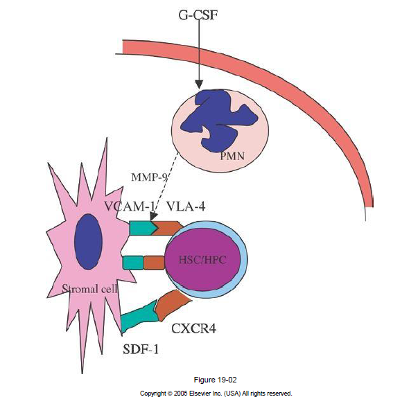
G-CSF از منابع سلولیای مانند endothelial cells، placenta، fibroblasts، monocytes و macrophages در جدول اسلاید آمده است. این عامل بر neutrophil precursors اثر میکند، تولید granulocyte colonies را تحریک میکند، progenitorها را بهسمت neutrophil سوق میدهد و بلوغ neutrophil را تحریک میکند.
کاربردهای درجشده عبارتاند از chemotherapy-induced neutropenia، stem cell mobilization، peripheral blood/bone marrow transplantation و congenital، idiopathic و cyclic neutropenia. در اسلایدی دیگر، برای G-CSF عبارت «Promote from G0 to G1» آمده است.
در گفتار، برای بیمارانی که شیمیدرمانی یا رادیوتراپی میشوند، تجویز G-CSF حدود ۴۸ تا ۷۲ ساعت پس از درمان مطرح شد؛ ممکن است دو تا سه آمپول بهصورت داخلجلدی تزریق شود. داخلجلدی یعنی پوست را بالا میگیرند و تزریق را در همان ناحیه انجام میدهند.
در اسلاید، T cells، macrophages، endothelial cells، fibroblasts و mast cells بهعنوان منابع GM-CSF، و bone marrow progenitor cells، dendritic cells، macrophages و NKT cells بهعنوان اهداف آن ذکر شدهاند. در فعالیتهای آن، antigen presentation، T-cell homeostasis و hematopoietic cell growth factor آمدهاند.
کاربردهای فهرستشده شامل chemotherapy-induced neutropenia، stem cell mobilization، peripheral blood/bone marrow transplantation و leukemia treatment است. در غلظت پایین، GM-CSF میتواند با افزایش بیان C-fms در GM-CFU، مسیر را بهسمت monocyte سوق دهد.
| عامل | منبع/هدف یا اثر ذکرشده | کاربردهای درجشده |
|---|---|---|
| EPO | از سلولهای interstitial اطراف tubule در کلیه ترشح میشود؛ بر BFU-E و CFU-E اثر میکند؛ تکثیر را تحریک و از apoptosis جلوگیری میکند | کمخونی بیماری مزمن کلیه؛ کمخونی بیماران سرطانی تحت شیمیدرمانی؛ جمعآوری autologous predonation blood؛ کمخونی در HIV برای امکان استفاده از AZT؛ پس از autologous hematopoietic stem cell transplant |
| G-CSF | منابع جدول: endothelial cells، placenta، fibroblasts، monocytes و macrophages؛ بر neutrophil precursors اثر میکند و تولید granulocyte colonies و بلوغ neutrophil را تحریک میکند | chemotherapy-induced neutropenia؛ stem cell mobilization؛ peripheral blood/bone marrow transplantation؛ congenital، idiopathic و cyclic neutropenia |
| GM-CSF | منابع: T cells، macrophages، endothelial cells، fibroblasts و mast cells؛ اهداف: bone marrow progenitor cells، dendritic cells، macrophages و NKT cells؛ فعالیتها شامل antigen presentation، T-cell homeostasis و hematopoietic cell growth factor | chemotherapy-induced neutropenia؛ stem cell mobilization؛ peripheral blood/bone marrow transplantation؛ leukemia treatment |
| عامل/گیرنده | ویژگیها و ارتباطهای ذکرشده |
|---|---|
| M-CSF | با نام C-SF1 نیز آمده است؛ گیرندهٔ آن FMS است |
| TPO | محرک اصلی تولید platelet و تمایز megakaryocyteها؛ در stem cellها و ردهٔ megakaryocyte نیز مطرح است |
| SCF | با نامهای stem cell factor، mast cell growth factor و Steel factor؛ C-kit ligand برای fibroblast و endothelial cell ذکر شده است |
| c-Kit (CD117) | گیرندهٔ SCF؛ tyrosine kinase؛ جلوگیری از apoptosis و نقش در embryogenesis؛ دو شکل free و membranous؛ mutation در SCF با poor prognosis در AML همراه دانسته شده است |
| FLT3 | tyrosine kinase؛ در اسلاید مشابه C-FMS توصیف شده؛ بیشترین بیان در lymphoid stem cell؛ mutation در AML مطرح است |
| مهارکنندههای FLT3 | sorafenib، lestaurtinib، sunitinib، tandutinib، quizartinib، midostaurin، gilteritinib، crenolanib، cabozantinib، Sel24-B489، G-749، AMG 925، TTT-3002 و FF-10101 |
در اسلایدهای growth factorها، G-CSF، GM-CSF، M-CSF، EPO، TPO، SCF/KIT ligand، FLT3 ligand و interleukinهای مختلف در ارتباط با ردههای خونی و کاربردهای درمانی فهرست شدهاند.
اسلایدهای درمانی مجموعهای از کاربردها از جمله stem cell mobilization، پس از chemotherapy/transplantation، bone marrow failure states، تحریک تولید platelet (اما نه در دوزهای قابلتحمل)، melanoma، renal cell carcinoma، lymphoma، HIV، allergy treatment، adjuvant درمان بیماری عفونی، asthma، کاربرد احتمالی در vaccines، rheumatoid arthritis، adoptive cell therapy و تولید antigen-specific T cells را نیز فهرست میکنند.
فعالیتهای جدول عبارتاند از proliferation of hematopoietic progenitors، costimulation with other cytokines، cell growth/activation of T cells and B cells، megakaryocyte maturation، neural differentiation، acute phase reactant، مهار cytokine production و macrophageها، تمایز T cell/T helper و cytotoxicity سلولهای CD8+/NK.
منابع و اهداف سلولی ذکرشده شامل HSC و progenitorها، T cells، B cells، liver، macrophages، CD4+ و CD8+ T cells، NK cells، monocytes، fibroblasts، endothelial cells و osteoblasts است. جدول استخراجشده، نسبت دقیق بعضی از این فعالیتها، منابع و کاربردها را به cytokineهای نامبرده وصل نمیکند.
| دستهٔ اطلاعات اسلایدها | موارد فهرستشده |
|---|---|
| کاربردهای درمانی | stem cell mobilization؛ پس از chemotherapy/transplantation؛ bone marrow failure states؛ تحریک تولید platelet (اما نه در دوزهای قابلتحمل)؛ melanoma؛ renal cell carcinoma؛ lymphoma؛ HIV؛ allergy treatment؛ adjuvant درمان بیماری عفونی؛ asthma؛ کاربرد احتمالی در vaccines؛ rheumatoid arthritis؛ adoptive cell therapy؛ تولید antigen-specific T cells |
| فعالیتها | proliferation of hematopoietic progenitors؛ costimulation with other cytokines؛ cell growth/activation of T cells and B cells؛ megakaryocyte maturation؛ neural differentiation؛ acute phase reactant؛ مهار cytokine production و macrophageها؛ تمایز T cell/T helper؛ cytotoxicity سلولهای CD8+/NK |
| منابع و اهداف سلولی | HSC و progenitorها؛ T cells؛ B cells؛ liver؛ macrophages؛ CD4+ و CD8+ T cells؛ NK cells؛ monocytes؛ fibroblasts؛ endothelial cells؛ osteoblasts |
تصویر ۹
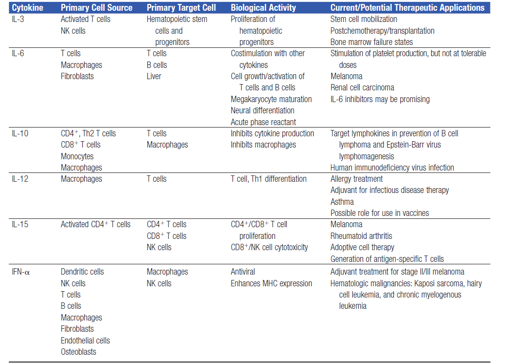
تصویر ۱۰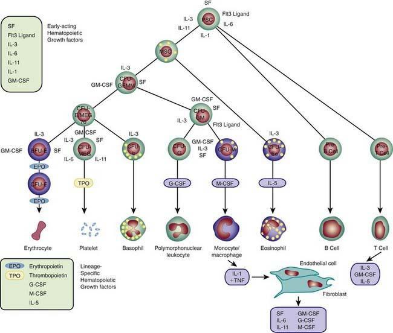
تصویر ۱۱در اسلاید، محل ژن بعضی از cytokineها روی کروموزوم ۵ نشان داده شده است. در گفتار، MDS (myelodysplastic syndrome) یا preleukemia، معمولاً در افراد بالای ۵۰ تا ۶۰ سال، مطرح شد. در بسیاری از این افراد ژنهای مرتبط با کروموزوم ۵ معیوباند و در برخی، بخشی از کروموزوم ۵ حذف شده است؛ تولید GM-CSF، IL-3، IL-5 و IL-4 ممکن است مختل شود. حذف کروموزوم لزوماً در همهٔ سلولها نیست و میتواند به همان رده یا cloneای محدود باشد که بیماری در آن ایجاد شده است.
اسلاید دیگری فهرستی از عوامل و موقعیتهای کروموزومی آنها دارد، اما تعدادی از اعداد و نمادهای آن در متن استخراجشده مخدوشاند.
EPO از کلیه ترشح میشود؛ بنابراین در نارسایی کلیه، اگر EPO کافی وجود نداشته باشد، باید از بیرون تأمین شود. EPO نوترکیب (recombinant) با فناوری DNA تولید میشود: ژن آن را جدا و کلون میکنند، در vector قرار میدهند و vector را در E. coli میگذارند تا با رشد باکتری در محیط کشت، EPO تولید شود.
به تولید EPO و G-CSF در ایران نیز اشاره شد و محصول recombinant بهعنوان پروتئینی توصیف شد که عوامل مزاحم و اضافی آن حذف شدهاند.
کبد محل تولید TPO است. در سیروز، فیبروز یا سرطان کبد ممکن است platelet بسیار پایین باشد، چون اختلال عملکرد کبد تولید TPO را مختل میکند و تولید platelet کاهش مییابد. پایش شمارش platelet میتواند در ارزیابی وضعیت بیمار کمککننده باشد؛ در گفتار این نکته بهعنوان روشی کمهزینهتر در مقایسه با FibroScan مطرح شد.
در درخت خونسازی، SCF از مراحل بالایی اثر میکند و IL-3 و GM-CSF بهعنوان عوامل رشد عمومی در مراحل مختلف دیده میشوند؛ EPO برای مسیر اریتروئیدی و TPO برای مسیر platelet لازماند. هرچه در مسیر پایینتر میرویم، سلولها تمایزیافتهتر میشوند. CD34-positive cellها شبیه هم و شبیه lymphocyte هستند و بهآسانی از روی مورفولوژی از هم افتراق داده نمیشوند.
نمودارهای اسلاید مسیرهای مختلف را همراه با عوامل رشد نشان میدهند: از HSC و common myeloid و common lymphoid progenitorها تا granulocyte-monocyte، eosinophil-basophil و megakaryocyte-erythrocyte progenitorها و در نهایت سلولهای بالغ.
| عامل رشد | جایگاه/مسیر ذکرشده در درخت خونسازی |
|---|---|
| SCF | اثر از مراحل بالایی |
| IL-3 و GM-CSF | عوامل رشد عمومی در مراحل مختلف |
| EPO | مسیر اریتروئیدی |
| TPO | مسیر platelet |
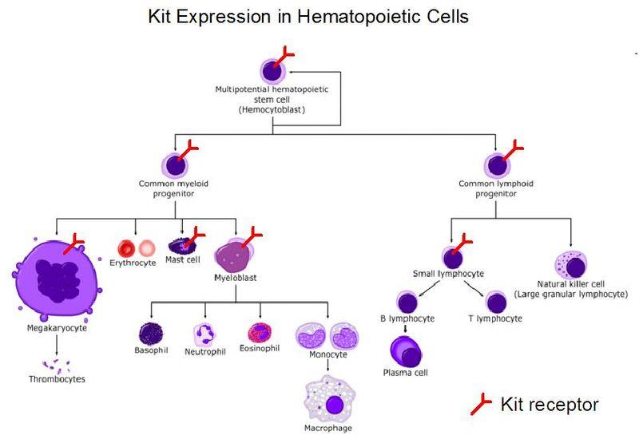
تصویر ۲۲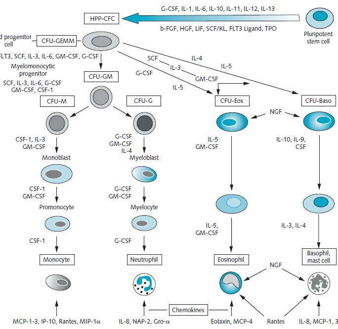
تصویر ۲۴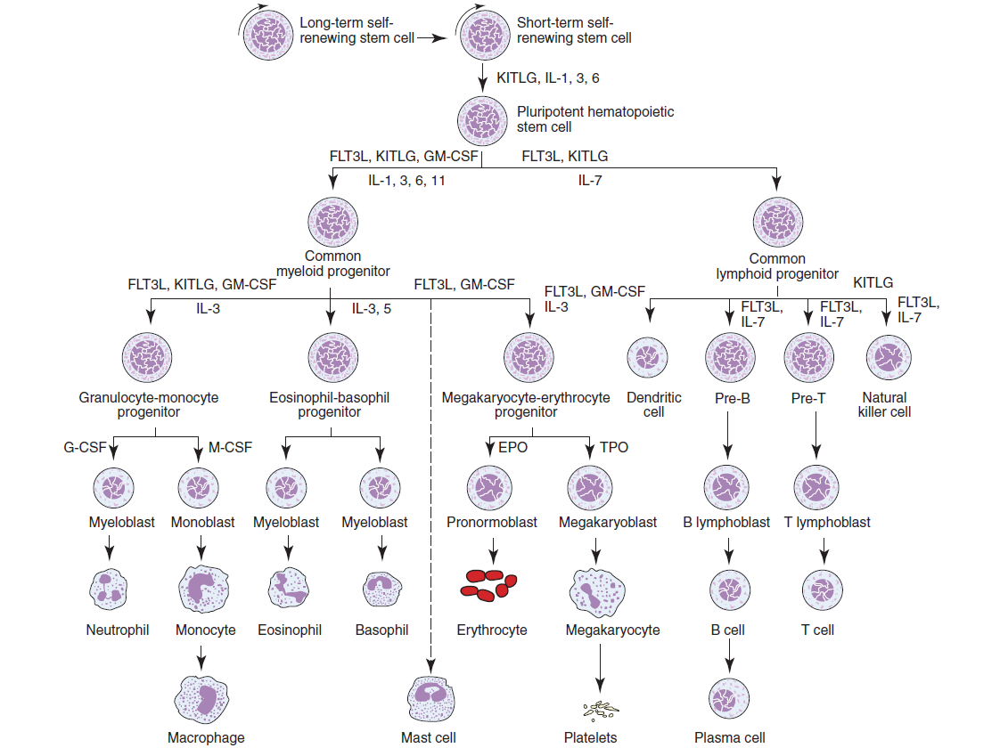
تصویر ۲۵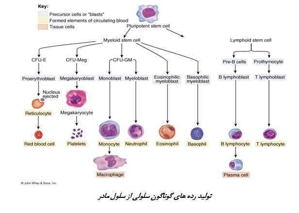
تصویر ۲۹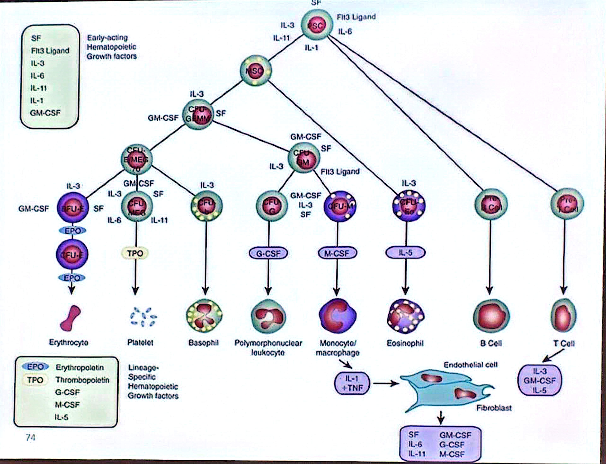
تصویر ۴۸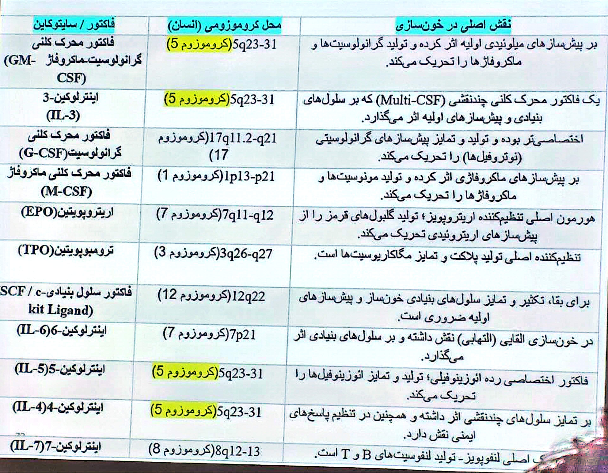
تصویر ۵۱برای erythropoiesis، EPO از مسیر JAK–STAT5 پیام میدهد. HIF (hypoxia-inducible factor) در پاسخ به کاهش اکسیژن مطرح است. در توضیح گفتار، پروتئینی در ناحیهٔ قوس آئورت بهعنوان HIF معرفی شد و گفته شد با پایینآمدن فشار یا میزان اکسیژن خون، HIF آزاد میشود و به کلیه میرسد؛ بخش زیادی از خون آئورت نیز برای فیلترشدن به کلیه میرود.
HIF یک transcription factor است که رونویسی ژن EPO را فعال میکند. EPO ذخیرهٔ ازپیشساختهشدهای در بدن ندارد؛ ژن آن برحسب نیاز رونویسی و هورمون ترشح میشود. EPO سپس به مغز استخوان میرود و خونسازی و بهطور خاص erythropoiesis را تحریک میکند.
نمودار HIF در اسلاید، در شرایط oxygen بالا، hydroxylation توسط prolyl hydroxylase و نقش VHL در degradation via proteasome را نشان میدهد؛ در hypoxia، HIF-α پایدار میماند و بر اهدافی مانند glycolytic enzymes، VEGF و EpoR/erythropoiesis اثر میگذارد. در نمودار، angiogenesis و تأمین آهن نیز در کنار اهداف HIF آمدهاند.
پس از انجام سیگنال، HIF باید تخریب شود. پروتئینهای غیرضروری، بدساخته، آسیبدیده یا متعلق به ویروس و باکتری میتوانند با اتصال ubiquitin برای تخریب توسط proteasome نشانهگذاری شوند. VHL (von Hippel–Lindau) در تخریب HIF نقش دارد. اگر VHL درست کار نکند، HIF تخریب نمیشود و تولید EPO ادامه مییابد؛ در گفتار این وضعیت با polycythemia (پرخونی) مرتبط شد. همچنین به polycythemia Chuvash(پرخونی چوواش) در برخی گروهها در نواحی کوهستانی ارمنستان و گرجستان اشاره شد که در آن VHL درست کار نمیکند و polycythemia رخ میدهد.
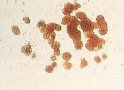
تصویر ۱۵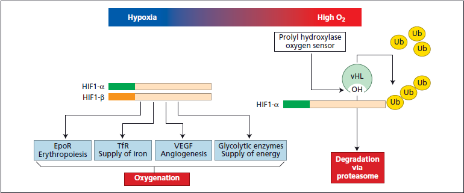
تصویر ۱۶EPO به سلولهای دارای EPO receptor متصل میشود. بخش سیتوپلاسمی گیرنده فسفریله و docking site ایجاد میکند؛ سپس STAT5 به آن متصل میشود. JAK–STAT5 در انتقال پیام EPO نقش دارد و STAT5 بهصورت dimer عمل میکند. فعالشدن JAK–STAT رونویسی، تمایز و تکامل بهسمت ردهٔ اریتروئیدی را افزایش میدهد.
TPO نیز بهطور مشابه پیام میدهد، اما در ردهٔ megakaryocytic اثر میکند و EPO در ردهٔ erythroid مؤثر است.
پس از فعالشدن مسیر، باید سیگنال نیز مهار شود. فعالشدن JAK–STAT ژن مهارکنندهٔ مسیر را هم تحریک میکند؛ با افزایش محصول آن، مسیر سرکوب میشود. این مهارکننده SOCS (suppressor of cytokine signaling) نام دارد و نمونهای از negative feedback است. اسلاید مسیر cytokine receptor، phosphorylation و dimerization شدن STAT، انتقال STAT dimer به nucleus، رونویسی ژن و تخریب proteasomal را نیز نشان میدهد.
| عامل/مرحله | توضیح ذکرشده |
|---|---|
| EPO و EPO receptor | اتصال EPO؛ phosphorylation بخش سیتوپلاسمی گیرنده و ایجاد docking site؛ اتصال STAT |
| JAK–STAT5 | انتقال پیام EPO؛ STAT5 بهصورت dimer عمل میکند؛ افزایش رونویسی، تمایز و تکامل بهسمت ردهٔ اریتروئیدی |
| TPO | پیامرسانی مشابه؛ اثر در ردهٔ megakaryocytic |
| EPO | اثر در ردهٔ erythroid |
| SOCS | مهارکنندهٔ مسیر؛ محصولی که پس از فعالشدن مسیر افزایش مییابد و سرکوب مسیر نمونهای از negative feedback است |
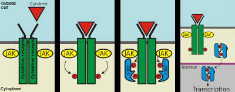
تصویر ۱۷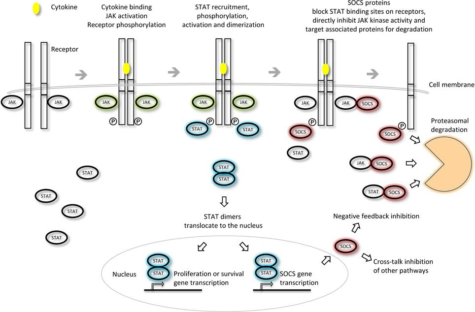
تصویر ۱۸در polycythemia vera، JAK–STAT بدون نیاز به EPO پیوسته سیگنال میفرستد؛ علت مطرحشده جهش در JAK است. اگر پرخونی علت مشخصی نداشته باشد، آزمایش JAK2 برای بررسی polycythemia vera پرخونی سرطانی انجام میشود. JAK2 V617F نیز بهعنوان عنوان اسلاید آمده است.
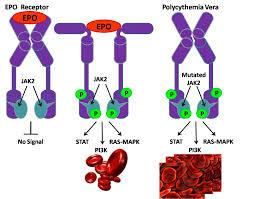
تصویر ۱۹در تصویر BFU-E، کشت پس از ۱۴ روز برای هر سلول ۵۰٬۰۰۰ گلبول قرمز و کشت CFU-E پس از حدود یک هفته ۳۰٬۰۰۰ گلبول قرمز نشان داده شده است. اعداد این توضیح با دامنهٔ ۵۰٬۰۰۰ تا ۱۰۰٬۰۰۰ برای BFU-E و حداکثر ۳۰٬۰۰۰ برای CFU-E که پیشتر در گفتار آمده بود، در اصل همجهتاند؛ یکی تعداد مشخصشده در مثال کشت و دیگری دامنهٔ بیانشده برای شرایط مطلوب است.
| پیشساز | توضیح کشت در تصویر | بیان کلی پیشتر در گفتار |
|---|---|---|
| BFU-E | پس از ۱۴ روز، ۵۰٬۰۰۰ گلبول قرمز برای هر سلول | ۵۰٬۰۰۰ تا ۱۰۰٬۰۰۰ گلبول قرمز در شرایط مطلوب |
| CFU-E | پس از حدود یک هفته، ۳۰٬۰۰۰ گلبول قرمز | تا ۳۰٬۰۰۰ گلبول قرمز |
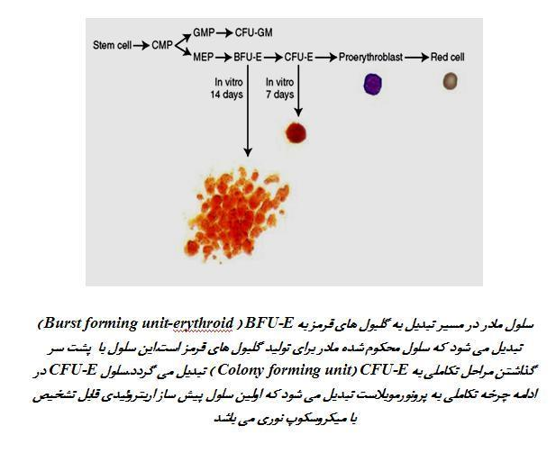
تصویر ۲۰در مسیر erythropoiesis، سلول committed یعنی BFU-E یا CFU-E تقسیم میشود و نخستین سلولی را ایجاد میکند که با light microscopy قابل شناسایی است: pronormoblast. این سلول تقسیم میکند و basophilic normoblast به وجود میآورد؛ سپس تقسیمهای بعدی polychromatophilic normoblast را ایجاد میکنند. پس از این مرحله، سلول دیگر توان تقسیم میتوزی ندارد. هسته فشرده میشود و سلول به orthochromatophilic normoblast میرسد؛ هسته را بیرون میاندازد و به reticulocyte تبدیل میشود. reticulocyte هنوز RNA دارد، حدود ۴۸ تا ۷۲ ساعت در مغز استخوان میماند و سپس وارد خون میشود؛ حدود ۲۴ ساعت در خون میماند تا erythrocyte بالغ شود.
ترتیب مراحل چنین است:
در این مسیر، اندازهٔ سلول و هسته بهتدریج کاهش مییابد و هسته فشردهتر میشود. فشردهترین هستهای که ممکن است در خون محیطی دیده شود، هستهٔ orthochromatophilic normoblast است.
در توضیح گفتار، ساختارهای هستهای اریتروئیدی بهصورت reticular توصیف شدند: در مراحل اولیه رشتهها بازتر و هسته آشکارتر است؛ سپس رشتهها نزدیک و فشرده میشوند و هسته کمتر دیده میشود تا ظاهر لکهلکه پیدا کند. سیتوپلاسم polychromatophilic normoblast به رنگ گلبول قرمز نیست و تیرهتر و چندرنگ دیده میشود. در orthochromatophilic normoblast، سیتوپلاسم تقریباً همرنگ گلبول قرمز مجاور است؛ ortho به معنای «مجاور» . در pronormoblast، حاشیهٔ سفید اطراف هسته ناحیهٔ Golgi است و perinuclear halo نام دارد.
| مرحله | ویژگیهای ذکرشده |
|---|---|
| pronormoblast | نخستین سلول مسیر که با light microscopy قابل شناسایی است؛ دارای perinuclear halo در ناحیهٔ Golgi |
| basophilic normoblast | پس از تقسیم pronormoblast ایجاد میشود |
| polychromatophilic normoblast | پس از تقسیمهای بعدی ایجاد میشود؛ سیتوپلاسم تیرهتر و چندرنگ است؛ پس از این مرحله سلول دیگر توان تقسیم میتوزی ندارد |
| orthochromatophilic normoblast | هسته فشرده؛ سیتوپلاسم تقریباً همرنگ گلبول قرمز مجاور؛ هستهٔ فشردهٔ آن ممکن است در خون محیطی دیده شود |
| reticulocyte | هسته را بیرون انداخته است؛ هنوز RNA دارد؛ حدود ۴۸ تا ۷۲ ساعت در مغز استخوان و حدود ۲۴ ساعت در خون میماند |
| erythrocyte | مرحلهٔ بالغ |
ترتیب مسیر: pronormoblast → basophilic normoblast → polychromatophilic normoblast → orthochromatophilic normoblast → reticulocyte → erythrocyte.
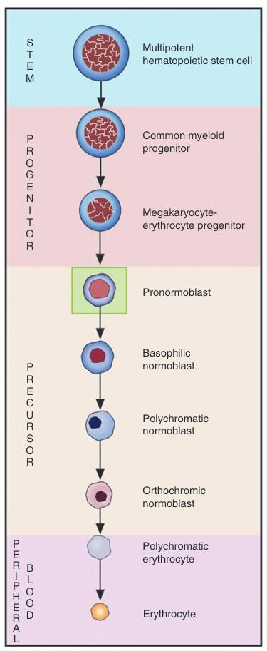
تصویر ۳۵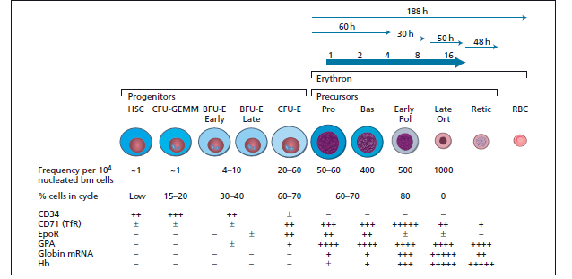
تصویر ۳۶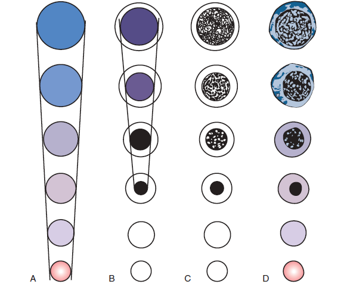
تصویر ۳۷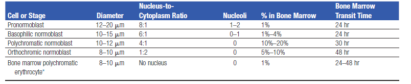
تصویر ۳۸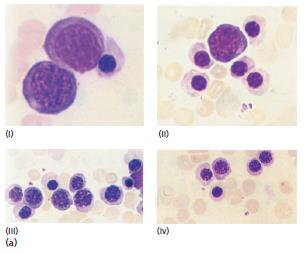
تصویر ۴۰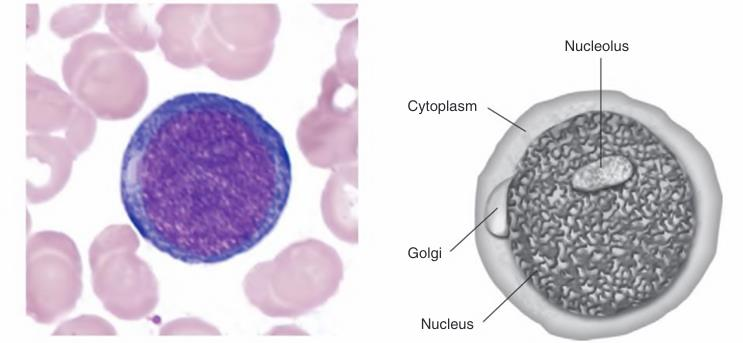
تصویر ۴۱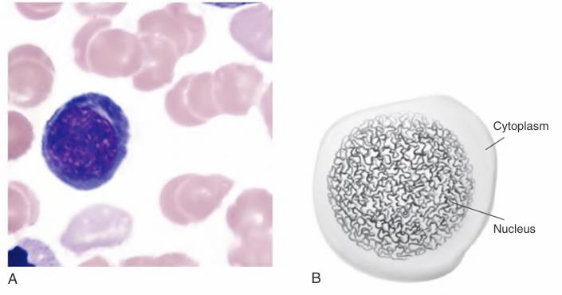
تصویر ۴۲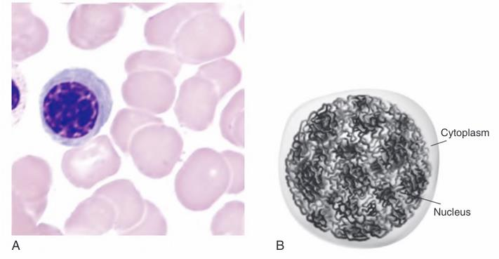
تصویر ۴۳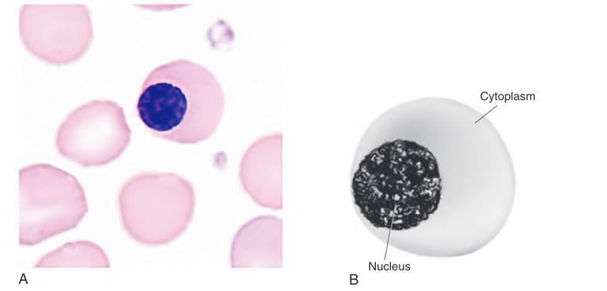
تصویر ۴۴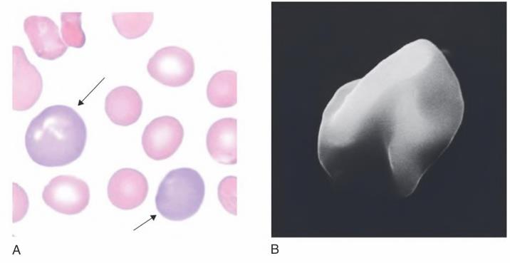
تصویر ۴۵در مغز استخوان، سلولهای اریتروئیدی کنار هم قرار میگیرند. macrophage مرکزی میتواند عوامل مکمل و آهن را در اختیار ردهٔ اریتروئیدی قرار دهد و مواد زائد، از جمله هستهها و میتوکندریهای خارجشده، را دریافت و ببلعد. تجمع سلولهای erythroblast در اطراف یک macrophage، erythroblastic island نام دارد. هرچه سلولها بالغتر میشوند، به macrophage نزدیکتر میشوند و میان آنها تبادل مواد انجام میشود.
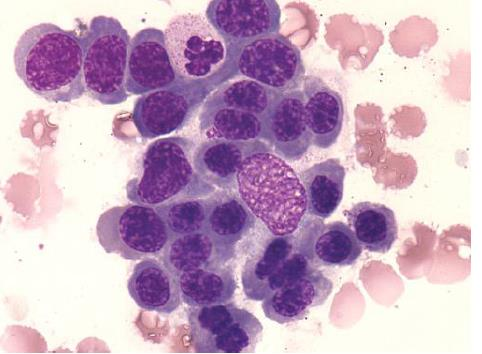
تصویر ۳۹در اسلاید، نام مراحل بهصورت pronormoblast، basophilic normoblast، polychromatophilic normoblast، orthochromic normoblast، polychromatic erythrocyte و erythrocyte آمده است. سایر نمودارهای خونسازی نیز رابطهٔ pluripotent stem cell، پیشسازهای myeloid و lymphoid، سلولهای precursor و سلولهای بالغ را نشان میدهند؛ کلید یکی از شکلها میان precursor cells of “blasts”، formed elements of circulating blood، tissue cells و pluripotent stem cell تمایز میگذارد.
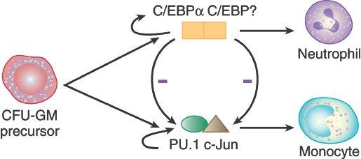
تصویر ۳۳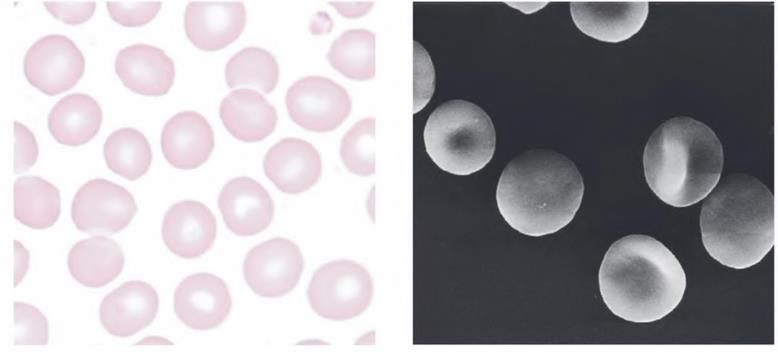
تصویر ۴۶تصویر ۴۹
EPO سه محل اثر دارد. :
| مرحله/محل | ویژگیهای مهم |
|---|---|
| کیسهٔ زرده | رگزایی و خونسازی همزمان؛ blood island؛ فقط ردهٔ اریتروئیدی؛ هموگلوبینهای گاور ۱، گاور ۲ و گاور ۳ |
| آورتا-گونادا-مزونفروس | پیدایش stem cellهایی با توان محدود که میتوانند همهٔ ردههای خونی را بسازند؛ definitive hematopoiesis |
| کبد | محل خونسازی تا نزدیکی تولد؛ زمان دقیق توقف در گفتار روشن نیست |
| مغز استخوان پس از تولد | تنها ارگان خونساز پس از تولد؛ در بزرگسالان عمدتاً استخوانهای پهن و کوتاه؛ نمونهبرداری از posterior iliac |
| سلول/پیشساز | توان یا سرنوشت ذکرشده |
|---|---|
| HSC | ایجاد ردههای myeloid و lymphoid |
| common myeloid progenitor | ایجاد ردهٔ myeloid |
| common lymphoid progenitor | ایجاد B cell، T cell و NK cell |
| CFU-GEMM | در کشت colony شامل granulocyte، erythrocyte، monocyte و megakaryocyte میسازد |
| CFU-MegE | امکان ایجاد megakaryocyte، platelet و erythrocyte؛ هنوز به یک ردهٔ نهایی متعهد نشده است |
| BFU-E و CFU-E | committed progenitorهای تولیدکنندهٔ ردهٔ گلبول قرمز |
| CFU-GM | توانایی تولید neutrophil و monocyte |
| CFU-G و CFU-M | بهترتیب تولید neutrophil و monocyte |
| CFU-Eo و CFU-Baso | ایجاد اختصاصی eosinophil و basophil |
| مورد | Markerها/جزئیات |
|---|---|
| progenitorهای اولیه | CD34؛ همراه با CD38 در بررسی مسیر |
| ردهٔ اریتروئیدی | CD11 و CD71 |
| ردهٔ myeloid | CD33 |
| megakaryocyte | CD41 و CD61 |
| homing | CD34-positive stem cellها پس از تزریق وریدی به مغز استخوان میرسند |
| mobilization | G-CSF با غلظت زیاد ارتباط نگهدارندهٔ CXCR4 را میشکند و سلولها را وارد خون محیطی میکند |
| مسیر | اجزا و رویدادها | پیامد یا نکته |
|---|---|---|
| Jagged–Delta/Notch | اتصال ligand؛ furin (S1)، ADAM (S2) و γ-secretase (S3/S4)؛ ligand endocytosis | جلوگیری از apoptosis، بقای سلول و تقسیم میتوزی متقارن یا نامتقارن |
| Wnt | اتصال LRP5/6 و Frizzled؛ dephosphorylation شدن β-catenin و ورود آن به هسته | β-catenin بهعنوان transcription factor، رونویسی ژنهای مرتبط با تقسیم؛ فعالشدن بیشازحد ممکن است در بدخیمی مطرح باشد |
| Hedgehog | Gli 1/2، Act و Ci در شکل | جزئیات عملکرد در گفتار توضیح داده نشده است |
| Janus kinase/JAK–STAT | فعالشدن JAK؛ recruitment و phosphorylation شدن STAT؛ dimerization و انتقال به هسته؛ negative feedback و cross-talk inhibition | cytokineها میتوانند به proliferation یا survival منجر شوند؛ SOCS مهارکنندهٔ منفی است |
| عامل/فرایند | ارتباط ذکرشده |
|---|---|
| افزایش methylation | کاهش بیان ژن |
| کاهش methylation | افزایش بیان ژن |
| افزایش acetylation | افزایش بیان ژن |
| microRNA | تنظیم بیان ژن؛ قطعات کوچک حدود ۱۹ تا ۲۵ nucleotide در توضیح درس به آن مرتبط شدند |
| BMI1 | جزء اصلی PRC1؛ تنظیم chromatin structure و gene silencing؛ مرتبط با self-renewal |
| TET2 | تبدیل 5-methylcytosine به 5-hydroxymethylcytosine؛ DNA hydroxymethylation و DNA demethylation |
| DNA methylation | مؤثر بر gene expression، chromatin stability و genetic imprinting |
| FoxO | در برابر ROS مطرح شده است |
| عامل | نقش یا ارتباط ذکرشده |
|---|---|
| IL-3 و GM-CSF | growth factor عمومی؛ زمینهٔ رشد برای ردههای مختلف، از جمله erythrocyte و platelet |
| G-CSF | رشد و بلوغ neutrophil؛ mobilization سلولهای بنیادی |
| EPO | ردهٔ اریتروئیدی؛ اثر بر BFU-E و CFU-E، تحریک تکثیر و جلوگیری از apoptosis |
| TPO | platelet و تمایز megakaryocyte؛ اثر از طریق c-Mpl |
| M-CSF | محرک تولید monocyte؛ گیرندهٔ FMS |
| IL-6 | تمایز B cell به plasma cell؛ افزایش در التهاب؛ در اسلاید رشد malignant plasma cell |
| IL-5 | در برخی منابع قدیمی eosinophilopoietic hormone |
| IL-4 | تکامل پاسخ B cell، تولید آنتیبادی و تمایز لنفوسیتها |
| IL-11 | ردهٔ megakaryocyte |
| IL-7 | growth factor سلولهای lymphoid؛ همافزا با FLT3L |
| IFN-γ، TGF-β و TNF-α | مهار erythropoiesis؛ افزایش میتواند مغز استخوان را سرکوب کند |
| عامل | منبع/هدف یا اثر | کاربردهای درجشده |
|---|---|---|
| EPO | ترشح از سلولهای interstitial اطراف tubule کلیه؛ اثر بر BFU-E و CFU-E؛ تحریک تکثیر و مهار apoptosis | کمخونی بیماری مزمن کلیه؛ کمخونی بیماران سرطانی تحت شیمیدرمانی؛ autologous predonation blood؛ کمخونی در HIV برای استفاده از AZT؛ پس از autologous hematopoietic stem cell transplant |
| G-CSF | منابع جدول: endothelial cells، placenta، fibroblasts، monocytes و macrophages؛ تحریک تولید granulocyte colonies و بلوغ neutrophil | chemotherapy-induced neutropenia؛ mobilization؛ peripheral blood/bone marrow transplantation؛ congenital، idiopathic و cyclic neutropenia |
| GM-CSF | منابع: T cells، macrophages، endothelial cells، fibroblasts و mast cells؛ اهداف: bone marrow progenitor cells، dendritic cells، macrophages و NKT cells | chemotherapy-induced neutropenia؛ mobilization؛ peripheral blood/bone marrow transplantation؛ leukemia treatment |
| مرحله | ویژگیهای ذکرشده |
|---|---|
| pronormoblast | نخستین سلول قابل شناسایی با light microscopy؛ دارای perinuclear halo در ناحیهٔ Golgi |
| basophilic normoblast | پس از تقسیم pronormoblast ایجاد میشود |
| polychromatophilic normoblast | سیتوپلاسم تیرهتر و چندرنگ؛ پس از این مرحله تقسیم میتوزی متوقف میشود |
| orthochromatophilic normoblast | هسته فشرده؛ سیتوپلاسم تقریباً همرنگ گلبول قرمز مجاور |
| reticulocyte | هسته خارج شده، RNA باقی است؛ ۴۸ تا ۷۲ ساعت در مغز استخوان و حدود ۲۴ ساعت در خون |
| erythrocyte | مرحلهٔ بالغ |
ترتیب: pronormoblast → basophilic normoblast → polychromatophilic normoblast → orthochromatophilic normoblast → reticulocyte → erythrocyte.
مراحل اصلی محل خونسازی را در طول رشد و پس از تولد شرح دهید و ویژگی شاخص خونسازی در کیسهٔ زرده و ناحیهٔ آورتا-گونادا-مزونفروس را بیان کنید.
خونسازی ابتدا در کیسهٔ زرده انجام میشود؛ در آن رگزایی و خونسازی همزماناند، blood island تشکیل میشود و فقط ردهٔ اریتروئیدی دیده میشود. سپس در ناحیهٔ آورتا-گونادا-مزونفروس stem cellهایی پدید میآیند که با توان خونسازی محدود میتوانند همهٔ ردههای خونی را بسازند؛ این فرایند definitive hematopoiesis نام دارد. stem cellها سپس به کبد مهاجرت میکنند و تا نزدیکی تولد خونسازی در کبد انجام میشود. پس از تولد، مغز استخوان تنها ارگان خونساز است.
تفاوت توان تمایز HSC، common myeloid progenitor و common lymphoid progenitor را توضیح دهید و شاخههای اصلی myeloid را نام ببرید.
HSC میتواند هر دو ردهٔ myeloid و lymphoid را بسازد؛ common myeloid progenitor به ردهٔ myeloid محدود است و common lymphoid progenitor میتواند B، T و NK بسازد. در ردهٔ myeloid، مسیرهایی برای erythrocyte و megakaryocyte/platelet، neutrophil و monocyte، و نیز eosinophil و basophil مطرح شدهاند.
پیامرسانی EPO را از اتصال به گیرنده تا تنظیم منفی مسیر شرح دهید و نقش SOCS را ذکر کنید.
EPO به EPO receptor متصل میشود؛ بخش سیتوپلاسمی گیرنده فسفریله و docking site ایجاد میکند و STAT به آن متصل میشود. JAK–STAT5 در انتقال پیام نقش دارد و STAT5 بهصورت dimer عمل میکند؛ مسیر رونویسی، تمایز و تکامل بهسمت ردهٔ اریتروئیدی را افزایش میدهد. فعالشدن مسیر ژن مهارکنندهٔ آن را نیز تحریک میکند. SOCS (suppressor of cytokine signaling) با افزایش محصولش مسیر را سرکوب میکند و نمونهای از negative feedback است.
مراحل بلوغ اریتروئیدی را بهترتیب بنویسید و تغییرات مهم reticulocyte را بیان کنید.
ترتیب مراحل عبارت است از pronormoblast، basophilic normoblast، polychromatophilic normoblast، orthochromatophilic normoblast، reticulocyte و erythrocyte. reticulocyte پس از بیرونانداختن هسته ایجاد میشود، هنوز RNA دارد، حدود ۴۸ تا ۷۲ ساعت در مغز استخوان میماند و سپس وارد خون میشود؛ حدود ۲۴ ساعت در خون میماند تا erythrocyte بالغ شود.
نقش ریزمحیط مغز استخوان و دو راه mobilization یا رسیدن سلولهای بنیادی به مغز استخوان را بر اساس متن توضیح دهید.
سلولهای استرومال ریزمحیط، از جمله fibroblast، osteoblast، reticular cell، adventitial cell و macrophage، با ارسال سیگنال و فراهمکردن growth factor از خونسازی حمایت میکنند و عوامل سمی را جذب و از بین میبرند. در homing، CD34-positive stem cellها از راه ورید تزریق میشوند و خودشان به مغز استخوان میرسند. در mobilization، CXCR4 یکی از ارتباطهایی است که سلول را در مغز استخوان نگه میدارد؛ تجویز غلظت زیاد G-CSF این ارتباط را میشکند و سلولهای مادر خونساز وارد خون محیطی میشوند.
کدام گزینه ویژگی خونسازی در کیسهٔ زرده را درست بیان میکند؟
در کیسهٔ زرده رگزایی و خونسازی همزمان است و بررسی میکروسکوپی فقط ردهٔ اریتروئیدی را نشان میدهد.
کدام گزینه دربارهٔ توان تمایز common lymphoid progenitor درست است؟
common lymphoid progenitor میتواند B cell، T cell و NK cell ایجاد کند.
کدام markerها در متن برای megakaryocyte ذکر شدهاند؟
برای megakaryocyte، CD41 و CD61 ذکر شدهاند.
بر اساس متن، افزایش غلظت G-CSF چه اثری بر سلولهای مادر خونساز دارد؟
در متن گفته شده است که با تجویز غلظت زیاد G-CSF، ارتباطی که سلول را در مغز استخوان نگه میدارد شکسته میشود و سلولها وارد خون محیطی میشوند.
در مسیر Wnt، پس از رسیدن Wnt چه تغییری برای β-catenin توصیف شده است؟
اتصال LRP و Frizzled پس از رسیدن Wnt با dephosphorylation شدن β-catenin و ورود آن به هسته همراه است.
کدام گزینه نقش TET2 را مطابق متن بیان میکند؟
TET2 با تبدیل 5-methylcytosine به 5-hydroxymethylcytosine در DNA hydroxymethylation و پیشبرد DNA demethylation نقش دارد.
کدام عامل در متن محرک تولید monocyte معرفی شده است؟
M-CSF محرک تولید monocyte است.
کدام گزینه ترتیب مراحل بلوغ اریتروئیدی را درست نشان میدهد؟
این ترتیب مراحل بلوغ اریتروئیدی در متن آمده است.
در مسیر HIF، VHL چه نقشی دارد؟
VHL در تخریب HIF نقش دارد؛ اگر درست کار نکند، HIF تخریب نمیشود و تولید EPO ادامه مییابد.
کدام گزینه دربارهٔ نمونهگیری خون در نوزادان تا ششماهگی مطابق متن است؟
تا ششماهگی نباید از نوک انگشت خون گرفت و باید از پاشنه استفاده کرد؛ همچنین گلوکز و پتاسیم در خون وریدی از خون مویرگی بیشتر است.
ادیتور: نیما قاسمی (ن.ق.شبزندهدار)
منابع استفادهشده:
برآورد تقریبی تکمیل محتوا: حدود ۹۵٪؛ موارد خوانا و قابل بازیابی از محتوای اسلاید و گفتار حفظ شدهاند.